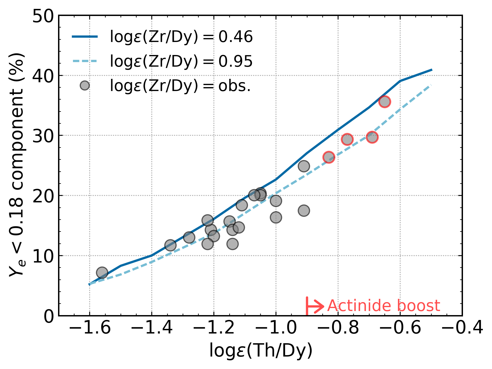

Actinide-Boost Stars Might Not Suggest a Separate r-Process Site
Erika M. Holmbeck
23 May 2019
Actinides in Stars
Placco, Holmbeck+ (2017); Holmbeck+ (2018)
Actinide Variation
The actinide-to-lanthanide ratio (Th/Eu) is not the same in all r-process enhanced stars
Actinide variations could be a hint to key r-process characteristics
Holmbeck+ (2019b)
Actinide Production and Ye
Th and U are produced by the r-process
The electron fraction Ye is a key parameter determining the extent of an r-process event
* Ye = [1+(n/p)]-1
Actinide Production and Ye
Th and U robustly produced at very low Ye
Holmbeck+ (2019a)
Actinide Boost Stars
Stars enhanced with Th and U can be reproduced by a combination of Ye
Holmbeck+ (2019a)
Can we go backwards?
Actinide-Dilution with Matching Model
Builds empirical mass ejecta distributions as a function of Ye (0.005-0.450)
To explain entire pattern from Zr to U
Empirical ejecta mass distributions
Distributions differ in very low-Ye component
Holmbeck+ (2019b)
ADM abundance pattern for Ret II
Holmbeck+ (2019b)
The low-Ye component
No discrete difference between actinide-rich and actinide-poor

Holmbeck+ (2019b)
Actinide-boost stars do not necessarily call for a separate r-process progenitor
Is this source an NSM?
NSM lightcurve
Lanthanide-poor blue ejecta + Lanthanide-rich red ejecta
Cowperthwaite+ (2017)
Two ejecta components
Two ejecta components
Results derived from r-enhanced stars agree* with an NSM observation
Further evidence that an NSM produced the material in r-enhanced stars like Ret II
Special Thanks
Rebecca Surman (ND), Gail C. McLaughlin (NC State), Anna Frebel (MIT)
Trevor M. Sprouse (ND), Matthew Mumpower (LANL)
Timothy C. Beers (ND), Nicole Vassh (ND), Terese T. Hansen (TAMU), Chris Sneden (UT-Austin)
Vinicius M. Placco (ND), Ian U. Roederer (UMich.), Charli M. Sakari (UW), Rana Ezzeddine (MIT)
Grant Mathews (ND), Ani Aprahamian (ND), Toshihiko Kawano (LANL)